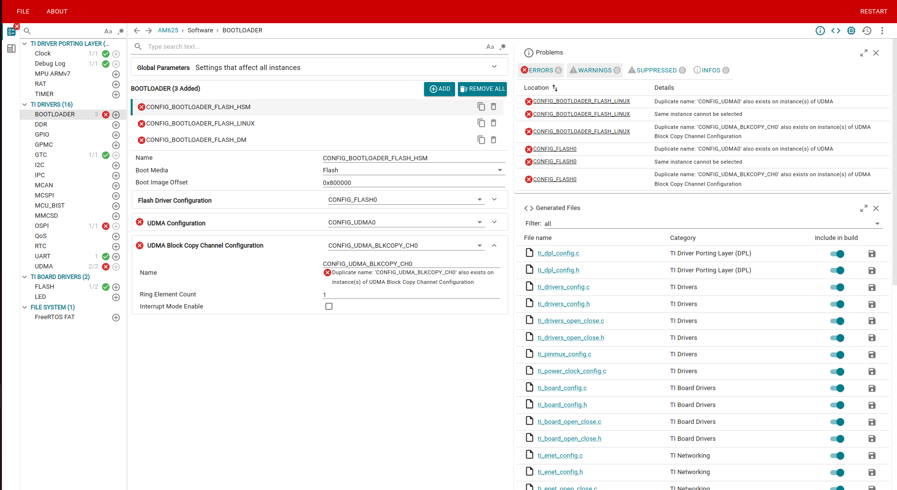

The Bootloader module provides APIs to write bootloader applications for various boot media like OSPI, UART, SOC memory etc.
- Note
- The bootloader driver is tested only in the context of a single thread and should be used only sequentially to boot cores to prevent potential errors and ensure stability. Also the current design of bootloader does not support parallel boot even when run in multiple threads.
Bootloader Migration Guidelines
While migrating to 11.00.00 MCU+ SDK, using the older example.syscfg file for bootloader examples with ospi dma enabled, can throw following error in gui, while running the command make syscfg-gui

Bootloader adds multiple udma instances
While using make command to build the example, it will throw following error
error: CONFIG_BOOTLOADER_FLASH_LINUX(/drivers/bootloader/bootloader) udmaDriver.$name: Duplicate name: 'CONFIG_UDMA0' also exists on instance(s) of UDMA
error: CONFIG_FLASH0(/board/flash/flash) serialFlashDriver.peripheralDriver.udmaDriver.$name: Duplicate name: 'CONFIG_UDMA0' also exists on instance(s) of UDMA
error: CONFIG_BOOTLOADER_FLASH_LINUX(/drivers/bootloader/bootloader) udmaBlkCopyChannel.$name: Duplicate name: 'CONFIG_UDMA_BLKCOPY_CH0' also exists on instance(s) of UDMA Block Copy Channel Configuration
error: CONFIG_FLASH0(/board/flash/flash) serialFlashDriver.peripheralDriver.udmaBlkCopyChannel.$name: Duplicate name: 'CONFIG_UDMA_BLKCOPY_CH0' also exists on instance(s) of UDMA Block Copy Channel Configuration
error: CONFIG_BOOTLOADER_FLASH_LINUX(/drivers/bootloader/bootloader) udmaDriver.instance: Same instance cannot be selected
error: CONFIG_FLASH0(/board/flash/flash) serialFlashDriver.peripheralDriver.udmaDriver.instance: Same instance cannot be selected
To fix this, update the example.syscfg, for every instance of bootloader define udma driver and udma block copy channel, refer the below lines to update example.syscfg
const udma = scripting.addModule("/drivers/udma/udma", {}, false);
const udma1 = udma.addInstance({}, false);
udma1.$name = "CONFIG_UDMA0";
flash1.serialFlashDriver.peripheralDriver.udmaDriver = udma1;
bootloader1.udmaDriver = udma1;
bootloader2.udmaDriver = udma1;
bootloader3.udmaDriver = udma1;
const udma_blkcopy_channel = scripting.addModule("/drivers/udma/udma_blkcopy_channel", {}, false);
const udma_blkcopy_channel1 = udma_blkcopy_channel.addInstance({}, false);
udma_blkcopy_channel1.$name = "CONFIG_UDMA_BLKCOPY_CH0";
flash1.serialFlashDriver.peripheralDriver.udmaBlkCopyChannel = udma_blkcopy_channel1;
bootloader1.udmaBlkCopyChannel = udma_blkcopy_channel1;
bootloader2.udmaBlkCopyChannel = udma_blkcopy_channel1;
bootloader3.udmaBlkCopyChannel = udma_blkcopy_channel1;
Migration Guide 11.02 to 12.00
- Note
- This section highlights linker changes from SDK 11.02 to 12.00.
<tt>gAtcmBaseAddr</tt> symbol required in SBL linker.cmd
- SBL startup code (entered via
-e_vectors_sbl) now references gAtcmBaseAddr to configure the ATCM base address at boot time.
- Custom SBL linker.cmd files that specify
-e_vectors_sbl as the entry point must define this symbol, or the linker will report an undefined symbol error.
Old linker.cmd:
--heap_size=0x8000
-e_vectors_sbl
New linker.cmd:
--heap_size=0x2000
/* ATCM base address - required when using -e_vectors_sbl entry point */
gAtcmBaseAddr = 0x78000000;
-e_vectors_sbl
- Note
- If ATCM is also needed for SBL heap and interrupt stacks, add the
ATCM region to MEMORY and relocate .sysmem and stack sections to ATCM. An MPU entry for ATCM is needed to be added to example.syscfg as well if so used. MEMORY
{
ATCM (RWIX) : ORIGIN = 0x78000000 LENGTH = 0x8000
HSM_RAM (RWIX) : ORIGIN = 0x43C00000 LENGTH = 0x3E000
}
SECTIONS
{
.sysmem: {} palign(8) > ATCM
GROUP {
.irqstack: {. = . + __IRQ_STACK_SIZE;} align(8)
.fiqstack: {. = . + __FIQ_STACK_SIZE;} align(8)
} > ATCM
GROUP {
.svcstack: {. = . + __SVC_STACK_SIZE;} align(8)
.abortstack: {. = . + __ABORT_STACK_SIZE;} align(8)
} > ATCM
}
const mpu_armv7_ATCM = mpu_armv7.addInstance();
mpu_armv7_ATCM.$name = "ATCM_SOC";
mpu_armv7_ATCM.baseAddr = 0x78000000;
mpu_armv7_ATCM.size = 15;
Features Supported
- OSPI Boot
- MEM Boot (Boot media is SOC memory)
- API to parse multicore appimage
- Separate APIs to boot self and non-self cores
SysConfig Features
- Note
- It is strongly recommend to use SysConfig where it is available instead of using direct SW API calls. This will help simplify the SW application and also catch common mistakes early in the development cycle.
- Bootloader instance name
- Boot Media to be used
- Boot Image offset
R5 Dual Core Support
RBL boots the R5 in eFUSE default, which is split mode. SBL (Secondary Boot Loader) follows the same and keeps the R5s in split mode. As of now the lock step configuration of dual R5 is not supported from bootloader.
Example Usage
Include the below file to access the APIs
Instance Open Example
Booting Cores Example
Instance Close Example
API
APIs for BOOTLOADING CPUs
 1.8.20
1.8.20